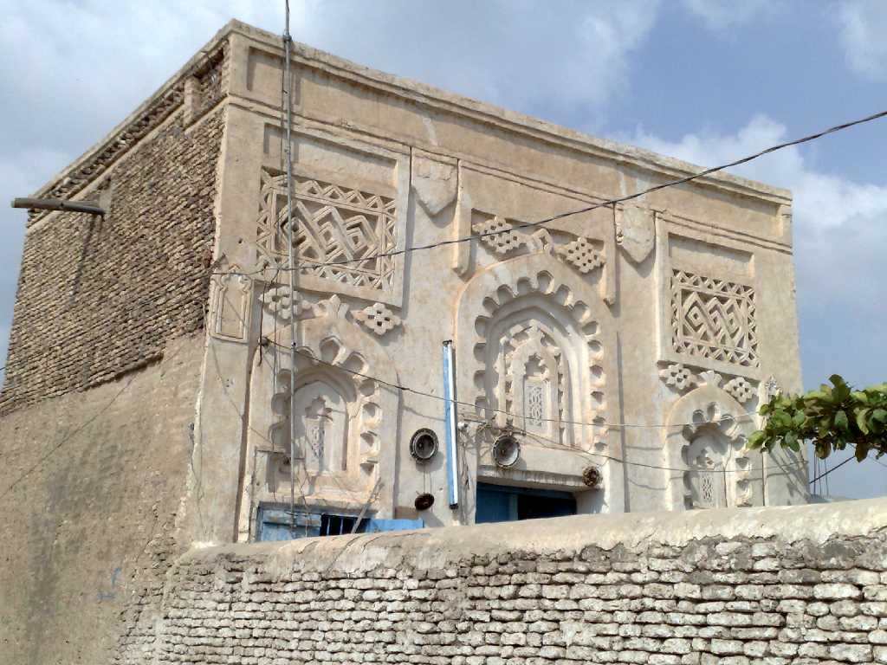

Murabba house Historic Town Zabid
９世紀から１１世紀にはズィヤード朝１１世紀から１２世紀にはナジャフ朝１３世紀から１５世紀にはイエメン王国の首都として栄えイスラム教シャーフィー派の神学校ザビード大学がありアラブ世界の教育宗教の中心地であった 最盛期には５０００人の学生が神学 法学 医学 数学などを研究し代数学algebra発祥の地と言われアラビア語 al jabr はバラバラのものを再結合するの意味である